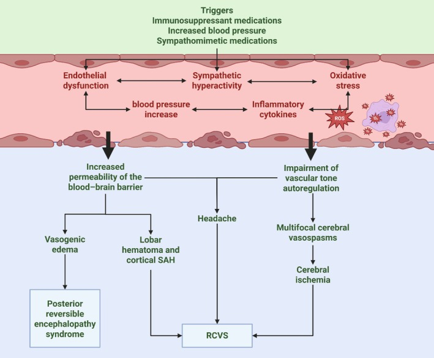
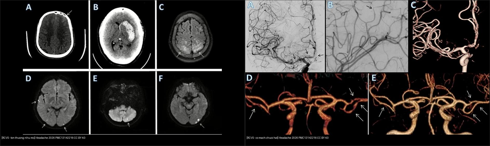
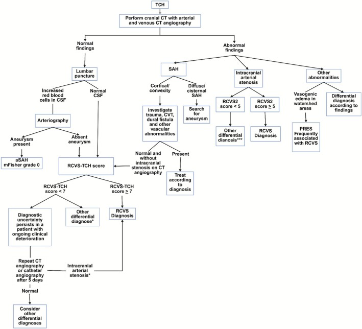
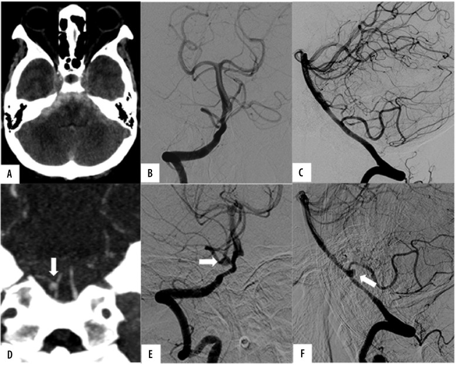
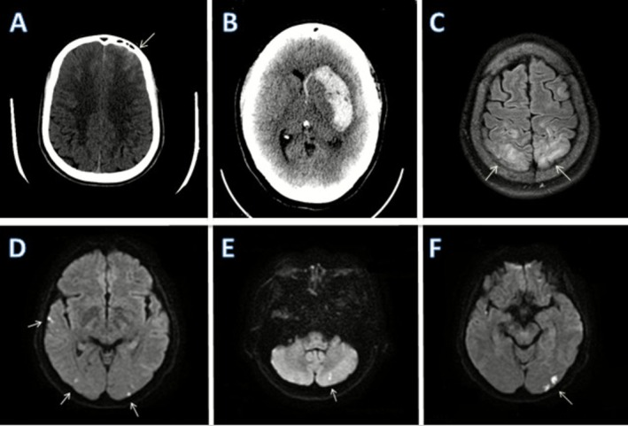
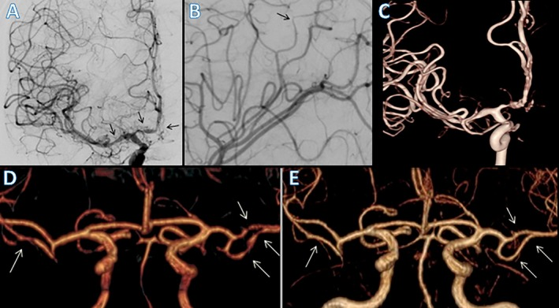

227 — Đau đầu sét đánh: tiếp cận cấp cứu & phân biệt SAH / RCVS / CVST / u tuyến yên / bóc tách / TCH nguyên phát / Thunderclap headache: emergency approach & differential diagnosis
Tags: pattern:dau-dau-set-danh pattern:xuat-huyet-duoi-nhen pattern:co-mach-nao vung:nao score:RCVS2 score:RCVS-TCH protocol:CT-CTA-MRV protocol:choc-dong
Mức chắc chắn (certainty): tổng hợp y văn (literature synthesis) — số liệu lấy từ bài tổng quan RCVS 2026 (PMC13142216), tổng quan SAH 2026 (PMC13121685) và ca SAH có ảnh CT (PMC11112413); các ca trong quiz là ca nguyên văn (verbatim case), giữ đúng tuổi – bối cảnh – chú thích gốc.
1. Tổng quan bệnh học – cơ chế hình ảnh (TẠI SAO)
- Đau đầu sét đánh (thunderclap headache, TCH) là triệu chứng, không phải chẩn đoán: đau đầu dữ dội đạt đỉnh trong < 1 phút (ICHD-3: < 60 giây), thường là “đau đầu tệ nhất đời”. Vì vậy mỗi ca TCH là một cấp cứu chẩn đoán, không được cho về chỉ vì “đau đầu”.
- TẠI SAO CT không cản quang thấy máu: máu tụ cấp đặc 60–80 HU, trong khi dịch não tủy (DNT) 0–15 HU và nhu mô não 35–40 HU → máu trong bể nền/rãnh cuộn não hiện tăng đậm độ trắng trên CT. Độ nhạy > 95% trong 24 giờ đầu, nhưng giảm dần theo thời gian vì hồng cầu ly giải, máu bị pha loãng và rửa trôi (Shen H et al., Mol Biomed 2026, PMC13121685).
- Vì sao vẫn bỏ sót SAH tới ~50%: đau đầu có thể tự giảm (“sentinel headache” — đau cảnh báo trước vỡ phình 2–8 tuần), CT quá sớm hoặc quá muộn, và không chọc DNT khi CT âm nhưng lâm sàng còn nghi. Chẩn đoán SAH là chẩn đoán loại trừ có hệ thống, không phải “CT âm là xong”.
- RCVS (reversible cerebral vasoconstriction syndrome) — nguyên nhân TCH quan trọng thứ hai sau SAH: đau đầu sét đánh tái diễn + co mạch từng đoạn đa ổ của động mạch não, hồi phục trong 3 tháng. TCH gặp ở 95–100% bệnh nhân RCVS; ở 76–85% đó là biểu hiện duy nhất. Tần suất ước tính 3 ca/triệu người/năm (PMC13142216).
- TẠI SAO RCVS gây tổn thương nhu mô: co mạch → giảm tưới máu → thiếu máu vùng chuyển tiếp; đồng thời rối loạn tự điều hòa + tăng tính thấm hàng rào máu-não → phù mạch máu (FLAIR tăng, DWI âm/ADC tăng) và có thể xuất huyết dưới nhện lồi (convexity SAH), xuất huyết nhu mô, nhồi máu (DWI sáng/ADC tối). Vì vậy RCVS không “lành tính tuyệt đối”.
- TẠI SAO MRA/CTA có thể bình thường: co mạch tiến triển từ trung tâm ra ngoại vi, nên tuần đầu MRA/CTA có thể âm; DSA là tiêu chuẩn vàng và có thể thấy co mạch động học (giãn sau tiêm thuốc giãn mạch nội động mạch).
- Ngưỡng định lượng nằm lòng:
- RCVS2 ≥ 5: độ nhạy 90%, độ đặc hiệu 99% cho RCVS; RCVS2 ≤ 2: đặc hiệu 100%, độ nhạy 85% để loại RCVS (PMC13142216).
- RCVS-TCH ≥ 7: độ nhạy 80%, độ đặc hiệu 97% phân biệt RCVS với chẩn đoán khác — nhưng không thay thế việc loại trừ SAH.
- SAH: CT > 95% trong 24 giờ đầu; khoảng 15% không tìm thấy nguồn chảy máu trên DSA; tỷ lệ chẩn đoán sai ước tính 50% (PMC13121685).
- Bóc tách động mạch cổ/đốt sống gặp ở ~8% bệnh nhân RCVS trong các cohort Pháp (PMC13142216) — luôn khảo sát mạch cổ, không chỉ mạch nội sọ.

Sơ đồ cơ chế: thuốc ức chế miễn dịch, tăng huyết áp, thuốc giao cảm → rối loạn nội mô, tăng hoạt giao cảm, stress oxy hóa → tăng tính thấm hàng rào máu-não (phù mạch máu, máu tụ thùy, SAH lồi) và rối loạn tự điều hòa (co mạch đa ổ → thiếu máu). Nguồn: de Sousa ÍA et al., Headache 2026 (PMC13142216), Fig. 2, CC BY 4.0.2. Mẫu hình + chẩn đoán phân biệt theo bối cảnh (Gamut)
- Nhóm mạch máu – nguy hiểm nhất:
- SAH do vỡ phình (aneurysmal SAH): TCH + cứng gáy + nôn; CT máu bể nền/rãnh; CTA → DSA; nguy cơ vỡ lại cao trong 24–72 giờ đầu.
- RCVS: TCH tái diễn nhiều lần trong 1–4 tuần, có yếu tố khởi phát (thuốc co mạch, hậu sản, Valsalva, stress); co mạch “chuỗi hạt” hồi phục.
- Huyết khối xoang tĩnh mạch não (CVST): đau đầu + tăng áp lực nội sọ, co giật, nhìn mờ; khuyết thuốc xoang (empty delta sign) trên CTV/MRV — xem bài 216.
- Bóc tách động mạch cổ/đốt sống: đau cổ + đau đầu, Horner, thiếu máu não sau; CTA/MRA cổ.
- U tuyến yên chảy máu/nhồi máu (pituitary apoplexy): TCH + sụp thị trường/liệt vận nhãn; CT có thể bỏ sót → MRI tuyến yên.
- PRES: TCH + THA cấp/thuốc ức chế miễn dịch + phù não sau — xem bài 219.
- Nhóm nhiễm trùng: viêm màng não cấp (sốt, cứng gáy, rối loạn ý thức) — chọc DNT.
- Nhóm áp lực DNT: hạ áp lực nội sọ tự phát sau chọc dòng/thủng DNT (đau đầu tư thế đứng).
- Nhóm lành tính – chẩn đoán loại trừ: TCH nguyên phát, đau đầu khi ho/Valsalva, đau đầu khi giao hợp, đau đầu khi gắng sức.
- Mnemonic “V-I-P”: Vascular (SAH, RCVS, CVST, bóc tách, u tuyến yên), Infection (viêm màng não), Pressure (hạ áp lực DNT) — cộng nhóm primary headache sau khi đã loại trừ.
3. Bảng so sánh phân biệt (ma trận đối chiếu)
| Thực thể (entity) | Hình ảnh điển hình | Chốt vào (rule-in) | Chốt loại (rule-out) | Gợi ý xác nhận |
|---|---|---|---|---|
| SAH do vỡ phình | CT không cản quang: máu tăng đậm độ 60–80 HU ở bể nền/rãnh cuộn não/khe Sylvius; có thể máu não thất | CT tăng đậm độ khoang dưới nhện + TCH + cứng gáy | CT bình thường > 24 giờ vẫn chưa loại trừ nếu không chọc DNT | CTA/DSA; DNT xanthochromia; điều trị túi phình < 24–72 giờ |
| RCVS | co mạch từng đoạn đa ổ “chuỗi hạt” trên DSA/MRA; có thể cSAH lồi, ICH, nhồi máu vùng chuyển tiếp, phù FLAIR | TCH tái diễn + yếu tố khởi phát + co mạch đa ổ hồi phục < 3 tháng; RCVS2 ≥ 5 | Co mạch một mạch, không hồi phục, ngấm mạnh thành mạch → xơ vữa/viêm mạch | MRA/CTA lặp 2–4 tuần; DSA; HR-vwMRI |
| CVST | khuyết thuốc xoang trên CTV/MRV; nhồi máu/xuất huyết tĩnh mạch, không theo lãnh thổ động mạch | Đau đầu + yếu tố nguy cơ (thai sản, thuốc tránh thai, tăng đông) + khuyết thuốc xoang | CTV/MRV bình thường hoàn toàn + D-dimer thấp → ít khả năng | CTV/MRV; D-dimer; chống đông |
| Bóc tách động mạch cổ/đốt sống | Hẹp hình nón/đuôi chuột, flap nội mạc, giả phình trên CTA/MRA cổ | Đau cổ + Horner + thiếu máu não sau; flap/giả phình | Mạch cổ bình thường trên CTA/MRA chất lượng tốt | CTA/MRA cổ; siêu âm Doppler; chống đông/kháng kết tập |
| U tuyến yên chảy máu (pituitary apoplexy) | Khối tuyến yên T1 sáng/T2 không đồng nhất (máu), chèn xoang hang; CT có thể chỉ thấy khối tự nhiên | TCH + sụp thị trường + liệt vận nhãn + khối tuyến yên | MRI tuyến yên bình thường + nội tiết bình thường | MRI sella có cản quang; cortisol/PRL/FT4; mổ giải ép nếu nặng |
| TCH nguyên phát / đau đầu ho–Valsalva–giao hợp | Không tổn thương trên CT/MRI/MRA/MRV; DNT bình thường | Tái diễn cùng hoàn cảnh, hình ảnh âm, đã loại trừ thực thể | Còn bất kỳ dấu hiệu mạch máu/nhiễm trùng → không gọi nguyên phát | Theo dõi; ICHD-3; điều trị triệu chứng |

Trái (A–F): tổn thương nhu mô RCVS — (A) xuất huyết dưới nhện lồi trán trái, (B) xuất huyết nhân bèo trái có máu não thất, (C) FLAIR tăng tín hiệu vùng chẩm hai bên, (D–F) nhiều ổ hạn chế khuếch tán vùng vỏ/dưới vỏ và tiểu não. Phải (A–E): tổn thương mạch — DSA hẹp từng đoạn M1/A1–A2 phải, hẹp nhánh xa, 3D-RA và MRA nhiều ổ hẹp, MRA sau 100 ngày hồi phục. Nguồn: de Sousa ÍA et al., Headache 2026 (PMC13142216), Fig. 3 & Fig. 4, CC BY 4.0; ảnh ghép letterbox giữ nguyên tỷ lệ.4. Protocol chụp + hệ phân độ/điểm chuẩn hóa
- Bước 1 — CT sọ không cản quang ngay: lớp ≤ 5 mm qua hố sau/bể nền; đọc bể nền, khe Sylvius, rãnh cuộn não, não thất, nhu mô. Nếu có máu → CTA ngay để tìm túi phình, rồi DSA.
- Bước 2 — CT âm nhưng còn nghi: chọc DNT sau 12 giờ (không sớm hơn vì máu chưa ly giải đủ): đếm hồng cầu ở 3 ống, xanthochromia bằng quang phổ kế (bilirubin đạt đỉnh 48 giờ, tồn tại tới 2 tuần). Chọc ra máu đỏ đều 3 ống không tự cải thiện = chọc trúng mạch, không loại trừ SAH.
- Bước 3 — MRI/MRA + MRV: nếu CT/DNT âm hoặc cần đánh giá nhu mô: FLAIR (máu dưới nhện, phù), SWI (vi xuất huyết), DWI/ADC (nhồi máu), MRA (co mạch), MRV (xoang tĩnh mạch). Ở RCVS, MRA tuần đầu có thể bình thường → lặp lại sau 2–4 tuần; DSA khi còn nghi ngờ cao.
- Bước 4 — RCVS2 (Rocha 2021): TCH tái diễn +5, yếu tố khởi phát (thuốc co mạch/hậu sản/Valsalva) +3, giới nữ +1, hẹp động mạch cảnh nội sọ −2, SAH lồi +5; ≥ 5 = RCVS (Se 90%/Sp 99%). RCVS-TCH (Cho 2023): TCH tái diễn +2, nữ +3, yếu tố khởi phát +3 (nhiều yếu tố +2), tăng huyết áp lúc đau +4; ≥ 7 = RCVS (Se 80%/Sp 97%). Điểm cao không miễn trừ SAH.
- Bước 5 — xử trí theo chẩn đoán:
- SAH: cầm máu túi phình < 24–72 giờ (coil/clip), nimodipine 21 ngày, kiểm soát huyết áp, dẫn lưu não thất nếu úng thủy.
- RCVS: ngừng ngay thuốc/yếu tố khởi phát, nimodipine giảm đau, không dùng corticosteroid (có thể làm nặng); theo dõi nhồi máu/xuất huyết.
- CVST: chống đông (heparin trọng lượng phân tử thấp → kháng vitamin K/DOAC), kể cả khi có xuất huyết nhu mô do tắc tĩnh mạch.
- Pituitary apoplexy: hydrocortisone ngay nếu suy thượng thận cấp; mổ giải ép qua xoang bướm khi suy thị lực/liệt vận nhãn nặng.
flowchart TD
A[Đau đầu sét đánh < 1 phút] --> B[CT sọ không cản quang ngay]
B -->|Máu dưới nhện| C[CTA → DSA: túi phình]
C --> D[Coil/clip < 24–72 giờ + nimodipine]
B -->|Bình thường| E{Còn nghi lâm sàng?}
E -->|Có| F[Chọc DNT ≥ 12 giờ: xanthochromia]
F -->|DNT dương| C
F -->|DNT âm| G[MRI + MRA + MRV]
E -->|Không| G
G -->|Co mạch từng đoạn| H[RCVS2/RCVS-TCH: ngừng yếu tố + nimodipine]
G -->|Khuyết thuốc xoang| I[CVST: chống đông]
G -->|Khối tuyến yên| J[Apoplexy: hydrocortisone ± mổ]
G -->|Bình thường hoàn toàn| K[TCH nguyên phát: loại trừ đủ + theo dõi]
H --> L[Lặp MRA 2–4 tuần: hồi phục < 3 tháng]

Sơ đồ gốc: CT sọ + CT mạch máu (động mạch và tĩnh mạch) là bước đầu; nếu bình thường → chọc DNT; nếu DNT âm → RCVS-TCH; nhánh có bất thường mạch → RCVS2 ≥ 5/≤ 2 hoặc chẩn đoán khác. Nguồn: de Sousa ÍA et al., Headache 2026 (PMC13142216), Fig. 5, CC BY 4.0.5. Biến thể bình thường và cạm bẫy
- “Sentinel headache” (đau cảnh báo): đau đầu dữ dội thoáng qua 2–8 tuần trước vỡ phình thật; CT lúc này có thể chỉ thấy máu rất mỏng hoặc âm → phải chọc DNT/CTA theo nguy cơ, không chờ đau tái diễn.
- CT quá sớm/quá muộn: trong 6 giờ đầu độ nhạy cao nhất; sau 24 giờ giảm rõ. CT bình thường không loại trừ SAH nếu lâm sàng điển hình.
- Chọc DNT “máu đều 3 ống”: phân biệt chọc trúng mạch (hồng cầu giảm dần, không xanthochromia) với SAH (xanthochromia, hồng cầu không giảm rõ). Ly tâm ngay, đo bilirubin bằng quang phổ kế, không chỉ nhìn bằng mắt.
- RCVS bị bỏ sót vì MRA bình thường tuần đầu: co mạch tiến triển từ gần ra xa; nếu TCH tái diễn + yếu tố khởi phát, lặp MRA/CTA sau 2–4 tuần hoặc DSA.
- Dùng corticosteroid trong RCVS có thể làm bệnh nặng hơn — không điều trị RCVS như viêm mạch/viêm màng não.
- SAH lồi (convexity SAH) ở RCVS nằm ở rãnh lồi bán cầu, không phải bể nền; đừng nhầm với SAH do vỡ phình và đừng bỏ qua RCVS.
- Pituitary apoplexy có thể giống SAH (TCH + nôn + cứng gáy do máu vào khoang dưới nhện) nhưng CT sọ âm; phải MRI tuyến yên khi có sụp thị trường/liệt vận nhãn.
- TCH nguyên phát là chẩn đoán loại trừ: chỉ chốt sau khi CT/CTA/MRV/DNT âm và không có yếu tố khởi phát mạch máu; theo dõi tái diễn.
6. Tự lượng giá — Blind Quiz
Ca 1 — Nữ 62 tuổi, đau đầu dữ dội đột ngột, cứng gáy. Nhìn CT trước, mô tả máu nằm ở đâu.

- Gợi ý: không sốt, không chấn thương; khởi phát đỉnh < 1 phút.
- Hỏi: mô tả phân bố máu? Chẩn đoán đầu tay? Bước tiếp theo và nguy cơ cần xử lý ngay?
Bấm để hiện đáp án (findings + chẩn đoán)
- Findings: máu tăng đậm độ lan tỏa trong bể nền, khe Sylvius và rãnh cuộn não, có máu trong não thất — mẫu hình SAH lan tỏa (không phải SAH lồi đơn thuần).
- Chẩn đoán: xuất huyết dưới nhện tự phát (SAH), nghĩ vỡ túi phình → CTA ngay, rồi DSA; cần xử lý túi phình < 24–72 giờ và nimodipine.
- Vì sao CT thấy: huyết khối cấp 60–80 HU tương phản với DNT 0–15 HU.
- Nguồn ảnh: Amantakul A et al., Pol J Radiol 2024 (PMC11112413), Fig. 2, CC BY-NC-ND 4.0 — ảnh giữ nguyên bản.
Ca 2 — Nữ 40 tuổi, nhiều cơn đau đầu sét đánh trong 2 tuần sau sinh. CT/MRI cho thấy tổn thương nhu mô; hỏi cơ chế và chẩn đoán.

- Gợi ý: đau đầu tái diễn, có yếu tố hậu sản; không sốt.
- Hỏi: có mấy loại tổn thương? Tại sao cùng một bệnh lại vừa xuất huyết vừa nhồi máu?
Bấm để hiện đáp án (findings + chẩn đoán)
- Findings: (A) SAH lồi trán trái; (B) xuất huyết nhân bèo trái có máu não thất; (C) FLAIR tăng tín hiệu vùng chẩm hai bên (phù mạch máu); (D–F) nhiều ổ hạn chế khuếch tán vùng vỏ/dưới vỏ và tiểu não.
- Chẩn đoán: RCVS có biến chứng — co mạch gây thiếu máu/nhồi máu và tăng tính thấm gây phù/xuất huyết; SAH lồi là dấu hiệu kinh điển.
- Cơ chế: rối loạn tự điều hòa + co mạch từng đoạn → đồng thời thiếu máu (DWI sáng/ADC tối) và phù mạch máu (FLAIR tăng/ADC tăng).
- Nguồn ảnh: de Sousa ÍA et al., Headache 2026 (PMC13142216), Fig. 3, CC BY 4.0.
Ca 3 — Cùng bối cảnh TCH tái diễn; DSA/MRA dưới đây. Dấu hiệu chốt là gì và tiên lượng?

- Gợi ý: bệnh nhân trẻ, không xơ vữa; đau tái diễn từng cơn.
- Hỏi: mô tả bất thường mạch? Vì sao không gọi là xơ vữa/viêm mạch? Theo dõi bằng gì?
Bấm để hiện đáp án (findings + chẩn đoán)
- Findings: (A, B) DSA hẹp từng đoạn M1 phải và A1–A2 phải, hẹp nhánh xa; (C) 3D-RA nhiều ổ hẹp; (D) MRA nhiều ổ hẹp hai bên; (E) MRA sau 100 ngày hồi phục.
- Chẩn đoán: RCVS — co mạch từng đoạn đa ổ, hồi phục < 3 tháng.
- Chốt loại xơ vữa/viêm mạch: hẹp nhiều ổ, từng đoạn, mạch khác nhau, hồi phục trên MRA lặp; xơ vữa thường lệch tâm, không hồi phục; viêm mạch ngấm thành mạch mạnh.
- Theo dõi: lặp MRA/CTA sau 2–4 tuần; DSA nếu còn nghi; theo dõi nhồi máu/xuất huyết.
- Nguồn ảnh: de Sousa ÍA et al., Headache 2026 (PMC13142216), Fig. 4, CC BY 4.0.
Ca 4 — Ghép đối chiếu: nhìn hai ô, xác định bên nào là “tổn thương nhu mô” và bên nào là “tổn thương mạch”; nêu 3 chẩn đoán phân biệt của TCH.
- Hỏi: dấu hiệu nào giúp phân biệt RCVS với SAH do vỡ phình? Kể 3 nguyên nhân TCH khác cần loại trừ.
Bấm để hiện đáp án (findings + chẩn đoán)
- Trái: tổn thương nhu mô (cSAH lồi, ICH, phù FLAIR, ổ DWI). Phải: tổn thương mạch (hẹp từng đoạn “chuỗi hạt”, hồi phục).
- RCVS vs SAH vỡ phình: RCVS thường TCH tái diễn, máu lồi (convexity) lượng ít, không có túi phình trên CTA/DSA, co mạch đa ổ hồi phục. SAH vỡ phình: máu bể nền nhiều, túi phình trên CTA/DSA.
- 3 nguyên nhân khác: CVST, bóc tách động mạch cổ/đốt sống, pituitary apoplexy (hoặc viêm màng não, hạ áp lực DNT, TCH nguyên phát).
- Nguồn ảnh: de Sousa ÍA et al., Headache 2026 (PMC13142216), Fig. 3 & 4, CC BY 4.0; ảnh ghép bằng
tools/make_composite.py.
Bài liên quan chéo
- 219 – PRES & RCVS — cơ chế phù mạch máu, RCVS2, biến chứng
- 216 – Dị dạng mạch & CVST — khuyết thuốc xoang, nhồi máu tĩnh mạch
- 212 – Xuất huyết sọ não — phân biệt SAH/IPH/SDH
- 211 – Đột quỵ thiếu máu não — DWI/ADC, mạch lớn
- 226 – Tủy mềm không chấn thương — tiếp cận mạch máu thần kinh
Không dùng để chẩn đoán độc lập khi chưa có người hướng dẫn.